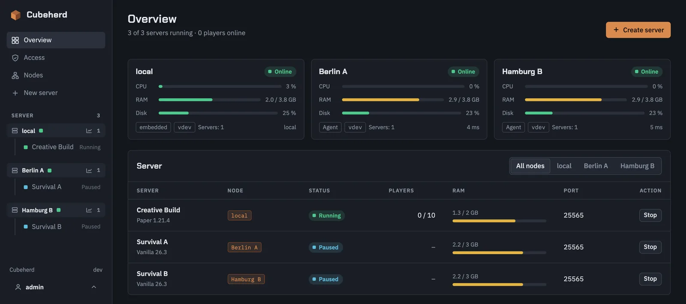
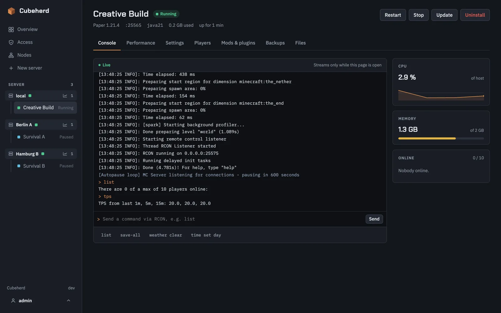
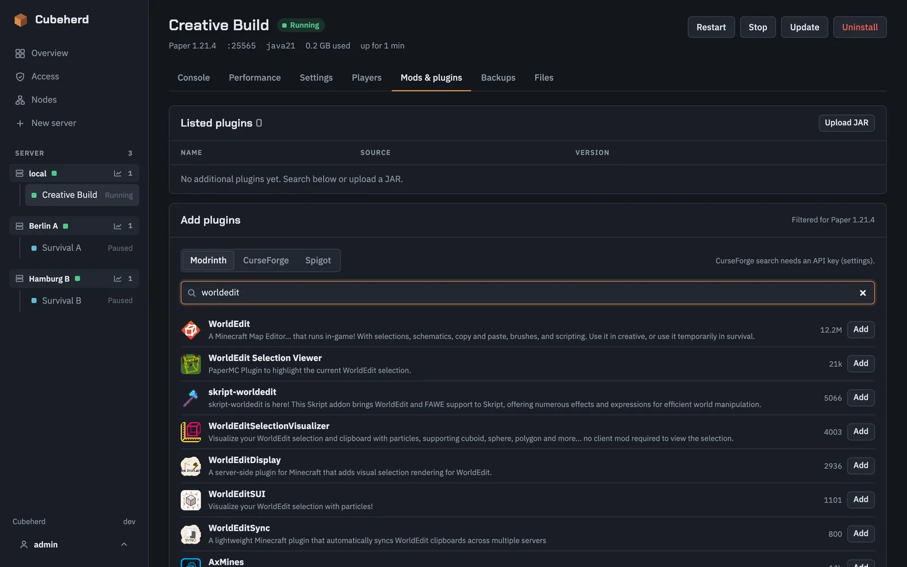
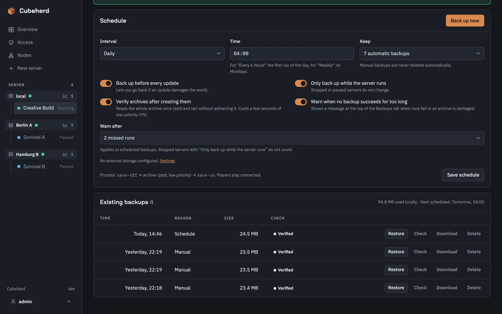
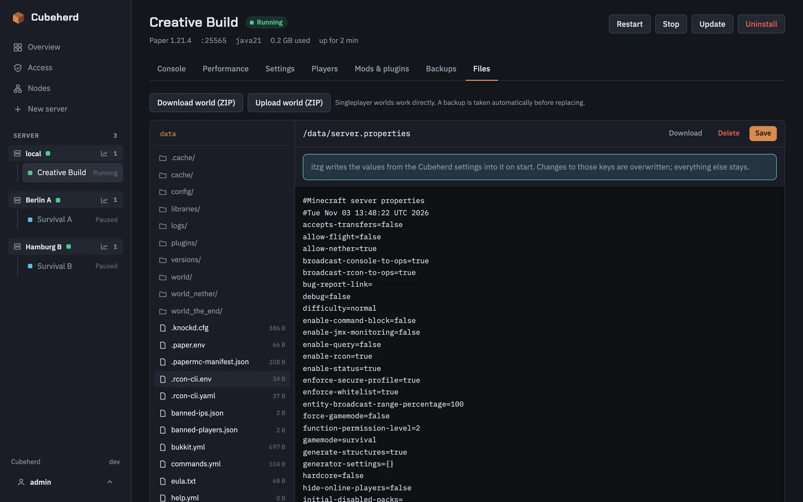
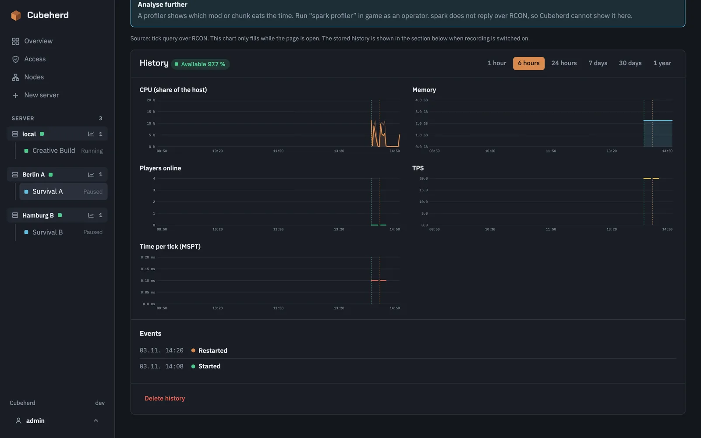
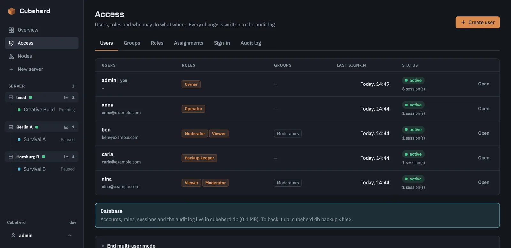
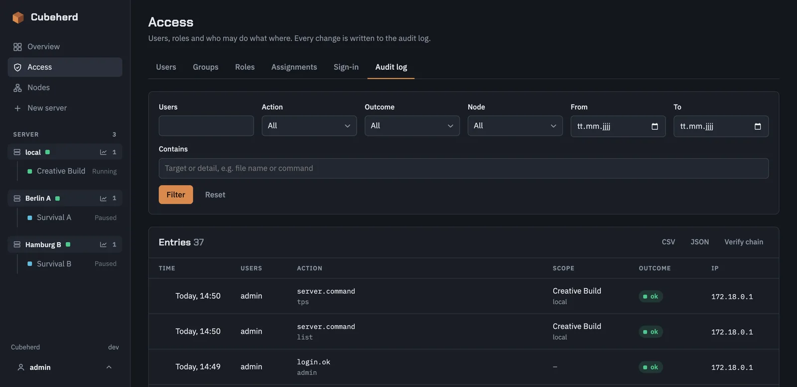

Several hosts
Manage servers on any number of machines from one dashboard. A small agent runs on each host, and servers are grouped by node.
Open source · MIT · self-hosted
Create, start, update, back up and uninstall servers built on itzg/docker-minecraft-server, including Modrinth and CurseForge modpacks, on one host or many. One Go binary, around 10 MB of RAM, no database.

Cubeherd runs next to your servers and takes next to nothing from them.
Manage servers on any number of machines from one dashboard. A small agent runs on each host, and servers are grouped by node.
Vanilla, Paper, Purpur, Folia, Fabric, Quilt, Forge, NeoForge or a modpack from Modrinth or CurseForge. The right Java image is picked for you.
Run commands over RCON, watch logs stream in, and see CPU, RAM and online players while a page is open.
Manual, scheduled and automatic before every update. Archives are verified after creation. Restore or download them, or ship them to S3-compatible storage.
Search Modrinth, CurseForge and Spigot, add and remove entries, or upload your own JARs. Works on top of modpacks too.
Browse, edit, upload and download server files. Export a world as a ZIP or import one.
Move to a new Minecraft version, modpack version or itzg image without touching a terminal.
Live TPS, tick time (MSPT), CPU and memory with a short history, queried only while the tab is open.
Pause or fully stop servers when nobody is playing, and cap CPU, memory and disk space per server.
Manage the whitelist, operators and bans from the browser.
Optional multi-user mode with personal accounts, roles, scoped rights, single sign-on (Google, OpenID Connect) and a tamper-evident audit log.
Two-factor sign-in with any authenticator app, password reset and sign-in notices by e-mail, and self-registration with approval by an admin.
A Customer role, disk quotas, suspending servers and a hardened container profile for renting out servers, with a guide to the recommended layout.
Re-skin the dashboard with your own product name, logo, favicon and every color, separately for the dark and the light theme.
Optional history of load, players and TPS per node and server, up to a year, with events, availability and a Prometheus endpoint.
Trusted proxies, a Secure session cookie, HSTS and a public address for single sign-on, with ready-made nginx, Caddy and Traefik examples.
Each server is a plain compose.yml in its own folder. Uninstall Cubeherd and your servers keep running.







Requires Docker with the Compose plugin on the host.
docker run -d --name cubeherd --restart unless-stopped \
-p 8420:8420 \
-v /var/run/docker.sock:/var/run/docker.sock \
-v /srv/cubeherd:/srv/cubeherd \
-e CUBEHERD_DATA=/srv/cubeherd \
ghcr.io/matserix/cubeherd:latestOpen http://<host>:8420 and set the admin password on first visit. See the full installation guide for Compose and binary installs.
Only expose Cubeherd on your LAN or via VPN. It has access to Docker, so treat its administrators like root on the host. In multi-user mode, roles limit what everyone else can do. If you must reach it from the internet, read the notes on reverse proxies and hosting in the installation guide first.
Cubeherd is a self-hosted web dashboard for itzg/docker-minecraft-server. It creates, starts, updates, backs up and uninstalls Minecraft servers, including modpacks from Modrinth and CurseForge, from one browser tab, on one host or across several.
Cubeherd is a single Go binary that needs around 10 MB of RAM and 0 % CPU when idle. It has no database by default and does no background polling: live data such as the console, CPU and RAM only flows while a page is open. User accounts and statistics are optional and bring their own SQLite files.
Vanilla, Paper, Purpur, Folia, Fabric, Quilt, Forge and NeoForge, plus modpacks from Modrinth and CurseForge. The matching Java image is derived from Mojang's version data.
Yes. Cubeherd can adopt existing itzg/docker-minecraft-server containers. Every server it manages lives in its own folder as a plain compose.yml, so it keeps working with docker compose even without Cubeherd.
Yes. Run the same image as a small agent on each host and add it under Nodes in the dashboard. Servers are grouped by node, and the connection is HTTPS with a pinned certificate fingerprint plus a bearer token. A node that goes offline is shown as unreachable while its servers keep running.
Yes, there is an optional multi-user mode. It adds personal accounts, roles with fine-grained rights, assignments scoped to everything, one node or one server, an audit log with hash-chained entries, and single sign-on with Google or any OpenID Connect provider. For dashboards that people outside your team reach there is account security: two-factor sign-in, password reset by e-mail, sign-in notices and self-registration with approval. By default Cubeherd still uses one shared admin password.
Yes, with care. The Customer role runs and configures the game, files, add-ons and backups but not memory, CPU, ports or raw environment. Servers can have a disk quota and can be suspended, a hardened container profile limits what a customer's container may do, and white-label branding replaces the product name, logo and colors. The hosting guide describes the recommended layout and says plainly what risk remains: containers share the host's kernel, so for customers you do not know, use a sandboxed runtime or separate virtual machines.
Yes, optionally. When switched on per node, each node records CPU, memory, disk, players and TPS once a minute and keeps up to a year of history, with start, stop and crash events and availability. Charts are fetched only when opened. A Prometheus endpoint with a scrape token reports live values of all nodes and servers. It is off by default and nothing runs while it is off.
Yes. Backups can be manual or scheduled, run automatically before updates, and can be restored or downloaded. Every archive is read back to verify it, and a banner warns when backups fail or are overdue. They can optionally be uploaded to S3-compatible storage such as AWS S3, Backblaze B2, Hetzner, Wasabi, Cloudflare R2 or MinIO, or kept only there.
Not directly. Cubeherd has access to the Docker socket, so an administrator can in practice reach the whole host. Keep it on your LAN or behind a VPN. If people outside your team must reach it, put it behind a reverse proxy with HTTPS and an access layer, set the trusted proxies and the public address, and turn on two-factor sign-in. In multi-user mode a viewer or moderator cannot reach the host, but anyone who may upload mods, edit files or send console commands can run code inside that server's container. Never put an agent on the internet: its token gives the same reach as an administrator.
Yes. Cubeherd is open source under the MIT license. It is not an official Minecraft product and is not affiliated with Mojang Studios or Microsoft.